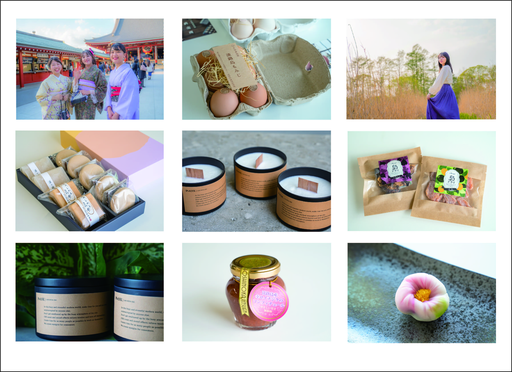

Marketing & Branding
Here is my marketing and branding work!
Click on a project's name to get more details.
Work
Projects built for companies and clients.
→ Instagram Marketing
Marketing Consultant — 2026 - Present
Contracted to manage Instagram marketing for a client. Handled content strategy, competitive analysis, performance tracking, and creating visual assets for the client's web presence.
→ Brand Identity Design
Brand Consultant — 2026 - Present
Defined the brand identity for a client from the ground up — established color codes, visual direction, target personas, and brand guidelines. Took the founder's abstract vision and translated it into a concrete, actionable brand system. Currently monitoring the client's creative output to ensure consistency with established brand guidelines.
→ Boku to Watashi and .inc
Assistant Director — Nov 2022 - Apr 2024
Gen-Z focused marketing and branding agency.
- Assisted in establishing a Dutch subsidiary and overseas business development
- English and Dutch translation for international operations
- Market research and competitive analysis for overseas expansion
→ Skyland Ventures Inc.
Intern — Jun 2022 - Feb 2023
Seed-stage Venture Capital fund dealing with Crypto and Web 3.0
- PR and communications: wrote weekly Web3 articles on Medium in English, managed PR TIMES releases
- Participated in investor meetings for crypto and Web3 startups
- Website translation and content updates (English)
→ CODEGYM Inc.
Marketing Intern — Oct 2021 - Jun 2022
Programming education startup — selected as a Top 100 Japanese startup to watch (2021).
- Planned and managed social media channels for a programming education brand
- Content creation, video production, and performance analysis
- Joined upstream marketing strategy meetings
→ MULK FAMILY Inc.
Short-term Intern — Oct - Nov 2021
Regional development / D2C on Awajishima island.
- Lived on Awajishima for 1 month, working on local branding
- Website creation, product photography, and D2C business planning
- Social media branding for local specialty food products
Personal Projects
Things I built on my own.
→ BLANK - CBD Incense & Candle Brand
Founder — Jul 2021 - Aug 2022
A D2C wellness brand I founded at age 20. "BLANK" means creating a moment of pause — a blank space in your busy day. Every aspect was built from zero: product development, brand identity, packaging design, e-commerce, and marketing.
Product Design: Developed CBD-infused incense and soy wax candles with wooden wicks. 4 months of R&D with professional fragrance blending.
Brand Identity: Created the full brand system: name, logo, packaging, photography, and tone of voice. Designed for Instagram-native sharing.
Crowdfunding: Launched on CAMPFIRE (Japan's leading platform). Managed copywriting, video production, reward fulfillment, and backer communication.
E-commerce: Built and managed the Shopify store. Ran pop-up exhibitions and direct sales channels.

→ BARS Marketing
Founder — Oct 2021 - Present
Gen-Z focused marketing and branding business.
- Social media branding and audience growth strategy
- Content planning, creation, and competitive analysis
- Account analytics and performance optimization
- Organized events: 80-person celebration event in Tokyo (2022), 40-person networking event in Okinawa (2021)
Skills & Tools
SNS Marketing, Content Strategy, Data Analytics, Competitive Analysis, Brand Design, Photography, Video Production, Copywriting, Event Planning